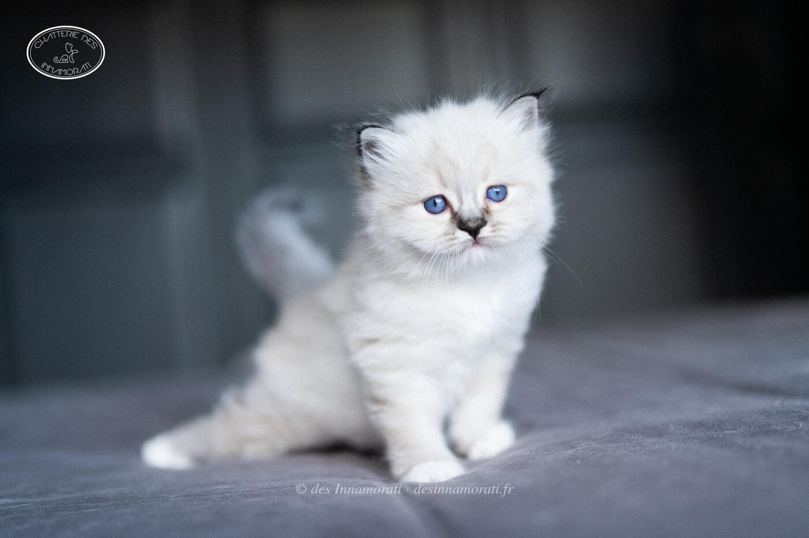

RobeFemelle · Seal tabby point
Naissance19 mai 2021
ParentsPadmée des Monts de Bohème × Crowned Dream Real Sugar Daddy
TitresIC
StatutReste à la maison
Album5 photos, de juin 2021 à juillet 2021
Frères et sœursSocrate des Innamorati
Demi-frères et sœurspar sa mère : 2020 avec Crowned Dream Quinten, 2022 avec Oedipe
par son père : 2022 avec Quintessence, 2025 avec Un Chouïa Craquante
par son père : 2022 avec Quintessence, 2025 avec Un Chouïa Craquante


Palmarès
14 expositions · 24 jugements2025
- Le Taillan BordeauxEXC2
- Le Taillan BordeauxCAGCIB
2023
- Saint JamesCAGCIB
- Saint JamesCAGCIB
- StrasbourgCAGCIB
- Vaux sur MerCAGCIB · NOM
- Vaux sur MerCAGCIB · NOM
- ParisCACIB
- ParisCACIB
2022
- PontchâteauCACIB · NOM
- PontchâteauCACIB
- LantonCACIB
- LantonCAC
- Braud et Saint LouisCAC
- Braud et Saint LouisCAC · NOM
- PontorsonEXC1
- PontorsonEXC1
2021
- PontchâteauEXC1
- PontchâteauEXC1
- St Seurin sur l'IsleEXC1 · NOM
- Braud et Saint LouisEXC2
- Braud et Saint LouisEXC2
- ParisEXC1
- ParisEXC1
EXC Excellent (classement) · CAC, CACIB, CAGCIB, CACS certificats de champion, champion international, grand champion international et suprême · CAP, CAPIB, CAGPIB, CAPS équivalents pour les chats stérilisés · BIV meilleur de la variété · NOM nommé pour le Best in Show · BIS Best in Show · BOB Best of Best, le meilleur de toute l’exposition
Photos réduites et marquées. Elles appartiennent à la Chatterie des Innamorati et ne peuvent pas être reprises dans une annonce.